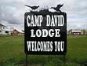

region. I also light up the evening with nightly campfires.
region. I also light up the evening with nightly campfires.The site that Camp David Lodge is on is an old farmstead. Many buildings have been refurbished to provide a variety of accommodations. The farmhouse has been refurnished to comfortably sleep several adults. The facilities house 37 beds. Each hunting party stays in a private building.
Camp David Lodge has several activities to take in while visiting. Hunters may hunt from sunrise to sunset with many upland game, including doves, ducks, geese, pheasants, grouse and partridge. Big game include deer, buffalo and coyotes.
Family owned and operated, Camp David Lodge has over 15,000 acres of private natural hunting habitat within ten miles.
David Scallon

Inquiries, rates and what to bring.
